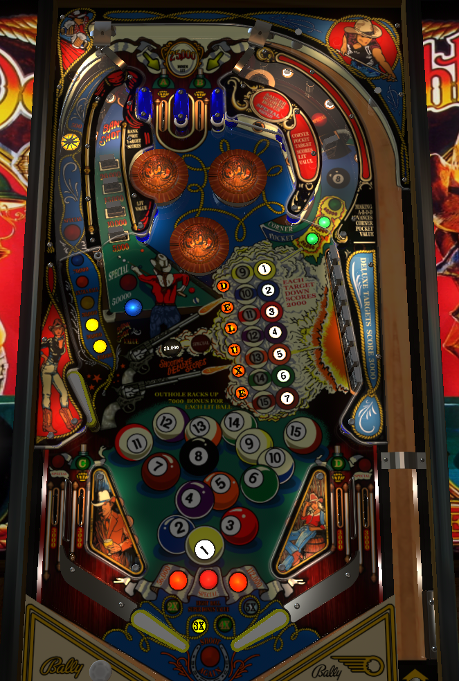

Eight Ball Deluxe is, at its core, a bonus building game. Use the first two balls to complete racks by knocking down all 7 right drop targets, then the 8 ball in the upper right lane. Bonus multiplier is at the inline drop targets. Bonus carries over between balls, but multiplier does not. Repeated shots to the left lane can also be decent value, or give extra balls or specials in casual play.
Odd numbered players play the solids (1-7 balls), while even numbered players play the stripes (9-15 balls). In the remainder of this guide, I describe the shots from the reference of the solid 1-7 balls.
The 7 drop targets on the right side of the playfield correspond to the 1-7 pool balls. Each drop target down scores 2,000 immediately and is worth 7,000 points to the base bonus.
All 7 targets down lights the 8 ball, which can be knocked down to finish a rack.
The only ways to reset the drop targets to advance the bonus further are to finish a rack (1-8 balls) and then either complete the Deluxe standups, or drain the ball.
All seven drop targets can be hit with either left flipper.
The A and B lanes are at the top of the playfield, and the C and D lanes are the in lanes. Completing A-B-C-D spots either one or two pool balls depending on settings (but cannot spot the 8 ball). Also depending on settings, the C and D lanes can be tied together so that collecting either one scores both.
If A and B have been collected, but at least one of C or D is not yet collected, one of the top lanes (alternating on bumper/sling hits) will be lit for 25,000 points.
All four of the A-B-C-D lanes are worth 3,000 points on their own.
The 8 ball doesn't do much of anything until it is lit after the 1-7 balls have been knocked down. Once it is lit, drop everything to shoot for it. Knocking down the 8 ball completes the rack, locks in bonus, and qualifies Deluxe.
Once the 8 ball has been lit and collected, the path to a bonus collect saucer behind it is open, which collects the bonus (without multipliers) and sends the ball back into the A-B lanes.
The 8 ball target's value can be advanced by completing A-B-C-D, up to a maximum of 60,000 points.
Once 1-7 balls have been finished and the 8 ball has been collected, Deluxe on the playfield can be shot for. This consists of 6 more standup targets placed behind the 1-7 drop targets, which are now lit and can do things. Deluxe standups are worth 3,000 points each. Completing Deluxe is worth either 50,000 points or a special as shown on the playfield. (Specials, when set for points, also score 50,000 points.)
If the ball is drained before Deluxe is completed, the mode is ended and the pool balls reset for the next ball. The pool balls also reset without draining if Deluxe is finished.
In competition play, there is no backglass Deluxe, and instead the Deluxe letters on the backglass are just tied to the progress of playfield Deluxe.
In arcade play, completing playfield Deluxe adds a letter to backglass Deluxe, which is a carryover award to be worked toward across multiple games. Completing backglass Deluxe gives a major award, usually 3 free games.
The left lane returns the ball to the top lanes, and a star rollover on the way up gives an award. The first shot to this lane lights the first award; from there, subsequent shots to the left lane on the same ball award 10,000, 30,000, 50,000, extra ball, 70,000, and special. (Extra balls are worth 25,000.) Once the special is collected, the lane is worth 70,000 points per shot.
It can be a viable strategy to shoot this all day after building up some bonus, if the feed out of the bumpers can be reliably controlled.
Each pool ball is worth 7,000 points to base bonus. Completing 1-7 and sinking the 8 ball corner pocket shot will lock in a 56,000 point super bonus for the remainder of the game. Completing a second rack locks in a 112,000 super bonus, and completing a third rack awards a special.
Bonus can be multiplied by up to 5X at the inline drop targets. Bonus carries over from ball to ball, but bonus X does not. Bonus X also does not apply to the collect bonus hole behind the 8 ball target.
The Bank Shot, a target behind the 5X target, scores 50,000 points or a special as lit on the playfield.